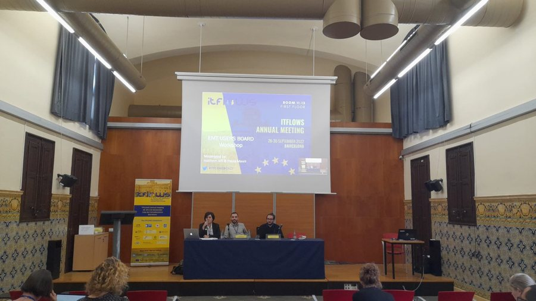
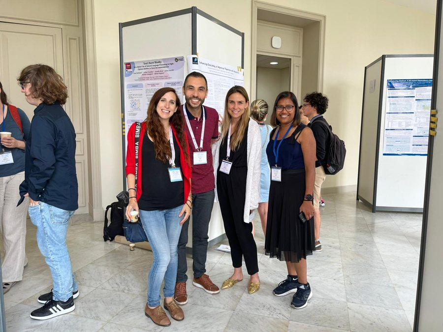

هذه الصفحة ترجمة للنص الإنجليزي الأصلي، أُعدّت بمساعدة الذكاء الاصطناعي ودُقّقت بأدوات آلية للنحو والإملاء والمصطلحات. ولم يراجعها بعدُ متحدث أصلي باللغة؛ والنسخة الإنجليزية هي المرجع المعتمد. اقرأ هذه الصفحة باللغة الإنجليزية
البحث
بحثٌ منظَّم في برامج متماسكة لا في موضوعات منفصلة. يتركز عمل الدكتور عفلي حاليًا على النماذج اللغوية الشاملة ومتعددة اللغات — وهو المحور الذي يشغل فيه منصب نائب القائد في Rinn Artificial Intelligence — ويتكامل هذا المحور مع برامجه الأوسع في علم التقييم والذكاء الاصطناعي الجدير بالثقة والذكاء الاصطناعي لعلم الأحياء دون أن يحلّ محلها.
برامج بحثية مخصَّصة
- Cultural Adaptation in NLP — نماذج لغوية متعددة اللغات متجذّرة في الثقافات، والاستدلال الثقافي، والتقييم.
- Beyond the Benchmark — التقييم الديناميكي والقائم على التوزيعات في معالجة اللغات الطبيعية.
البرنامج البحثي الرئيسي
الذكاء الاصطناعي متعدد اللغات والواعي ثقافيًا
الاستدلال عبر اللغات والثقافات، ومعالجة اللغات منخفضة الموارد واللهجات (مع التركيز على العربية)، والترميز (tokenisation)، والتقييم متعدد اللغات.
لماذا يهمّ ذلك: تعمل معظم التقنيات اللغوية على أفضل وجه باللغة الإنجليزية، في حين لا يحظى مليارات المتحدثين بالعربية وباللغات منخفضة الموارد بخدمة كافية. ويهدف هذا العمل إلى سدّ هذه الفجوة.
افتح صفحة محور «الذكاء الاصطناعي متعدد اللغات والواعي ثقافيًا» ←
المحاور المشتركة
علم التقييم وLLM-as-a-Judge
التقييم بوصفه علمًا للقياس: التقييم القائم على التوزيعات، والمعايير الديناميكية المراعية للمتانة، وموثوقية استخدام النماذج اللغوية الكبيرة مُقيِّمةً (LLM-as-a-judge).
لماذا يهمّ ذلك: إذا لم نستطع قياس قدرات نموذج ما قياسًا موثوقًا، فلا يمكننا الوثوق بالادعاءات المتعلقة به. ويتعامل هذا العمل مع التقييم نفسه بوصفه أداة علمية.
الذكاء الاصطناعي الجدير بالثقة والسلامة والحوكمة
المتانة، وعدم اليقين، والإنصاف، وقابلية التفسير، والتعلم المحافظ على الخصوصية والتعلم الاتحادي، وحوكمة الذكاء الاصطناعي.
لماذا يهمّ ذلك: يجب أن يكون الذكاء الاصطناعي الذي يُسهم في قرارات الرعاية الصحية والحوكمة والحياة العامة متينًا ومنصفًا وقابلًا للتفسير قبل الاعتماد عليه.
افتح صفحة محور «الذكاء الاصطناعي الجدير بالثقة والسلامة والحوكمة» ←
الذكاء الاصطناعي المتمحور حول الإنسان
دراسة الذكاء الاصطناعي بوصفه منظومة اجتماعية تقنية وثقافية: المساءلة الخوارزمية، وقابلية التفسير، والأبعاد الإنسانية والمجتمعية للأنظمة الذكية.
لماذا يهمّ ذلك: لأن أنظمة الذكاء الاصطناعي باتت تتوسط على نحو متزايد في المعرفة والثقافة واتخاذ القرار، فيجب فهمها — وتصميمها — مع وضع الإنسان في المركز، لا مجرد تحسينها لتحقيق نتائج أعلى في المعايير.
المحاور التطبيقية
الذكاء الاصطناعي للرعاية الصحية وعلم الأحياء وعلم الجينوم
تعلم الآلة لعلم الجينوم وتحليل الميكروبيوم والبيانات الطبية الحيوية والسريرية، بما في ذلك النماذج الأساسية للبيانات البيولوجية.
لماذا يهمّ ذلك: تُعدّ البيانات الجينومية والسريرية من أكثر المجالات تأثرًا بالذكاء الاصطناعي الجدير بالثقة، إذ تؤثر الموثوقية وقابلية التفسير فيها تأثيرًا مباشرًا في الناس.
افتح صفحة محور «الذكاء الاصطناعي للرعاية الصحية وعلم الأحياء وعلم الجينوم» ←
الابتكار المسؤول والتسويق
تحويل البحث إلى منتجات وخدمات مسؤولة ومتمحورة حول الإنسان من خلال الشركات الناشئة المنبثقة والشراكات الصناعية والتسويق.
لماذا يهمّ ذلك: يُنتج البحث قيمةً حين يصل إلى قاعات الدراسة والعيادات والخدمات العامة والصناعة؛ والتسويق هو ما يجعل هذا الأثر مستدامًا.
برنامج البحث الحالي
- نماذج لغوية شاملة متعددة اللغات — تطوير نماذج تعمل بموثوقية عبر اللغات الغنية بالموارد والفقيرة بها، وتقييمها.
- الاستدلال الثقافي في الذكاء الاصطناعي التوليدي — دراسة كيفية تفسير النماذج اللغوية للمعارف والقيم وأنماط الاستدلال الخاصة بكل ثقافة.
- تقييم موثوق متعدد اللغات — دراسة حدود المُقيِّمات الآلية والمعايير وبروتوكولات التقييم عبر اللغات والثقافات.
- تقنيات ترجمة شاملة — تصميم أساليب ترجمة تحافظ على المعنى والسياق الثقافي والمشاعر والمصطلحات المتخصصة.
- تقييم الذكاء الاصطناعي المتمحور حول الإنسان — الجمع بين تقييم الخبراء والمجتمعات والمستخدمين والمقاييس التقنية.
- الذكاء الاصطناعي للصحة والمجالات العلمية — تطبيق النماذج اللغوية والنماذج الأساسية الجينومية وتعلم الآلة الجدير بالثقة على أبحاث الرعاية الصحية وعلم الأحياء.
- نقل البحث والابتكار — ربط البحث الأساسي بالتطبيقات في القطاع العام والتعليم والصناعة والمجتمع.



